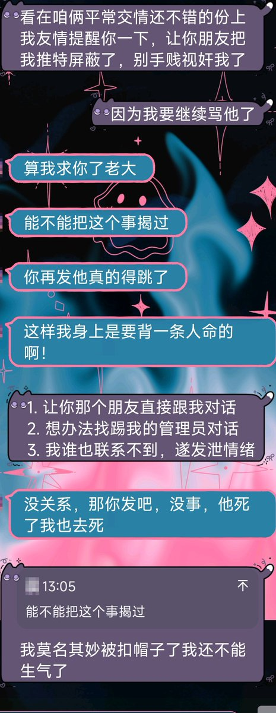
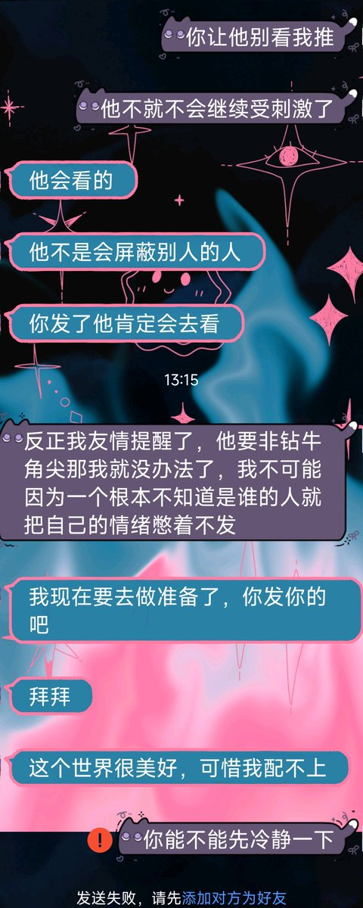

我昨天已经尝试联系了兄弟盟的一个管理员，但他说他不管这事，踢我那个人设了权限我加不了好友，我昨天也发了一次群申请，现在因为兄弟盟不愿意正面处理我的事情，导致有两个群友要紫砂，并且他们人多声音大肯定还要把这两个大帽子扣我头上！
她妈的，一个比一个神经病！莫名其妙造谣我泄露群记录，莫名其妙造谣我开盒，还一个证据都拿不出来，这次人死了是不是还要怪我闹事？只要我早点息事宁人就什么都不会发生对吧？
事实上是，但凡那个A少贩剑去管那点b闲事，这一切也都不会发生！现在还要道德绑架我？你装什么清高呢你这辈子没有背后蛐蛐过人？还威胁上我了

她妈的，一个比一个神经病！莫名其妙造谣我泄露群记录，莫名其妙造谣我开盒，还一个证据都拿不出来，这次人死了是不是还要怪我闹事？只要我早点息事宁人就什么都不会发生对吧？
事实上是，但凡那个A少贩剑去管那点b闲事，这一切也都不会发生！现在还要道德绑架我？你装什么清高呢你这辈子没有背后蛐蛐过人？还威胁上我了


我更正我的发言，不是【兄弟盟的管理员看见】，而是某个群员(A)看见之后报告给了兄弟盟管理。但是这件事是由A告诉了我的朋友C，又由C告诉我朋友B，B告诉的我。期间没有人说要保密，所以我就很生气我就发推了。… https://t.co/zskAbaNV5b https://t.co/3mQepWD2ym